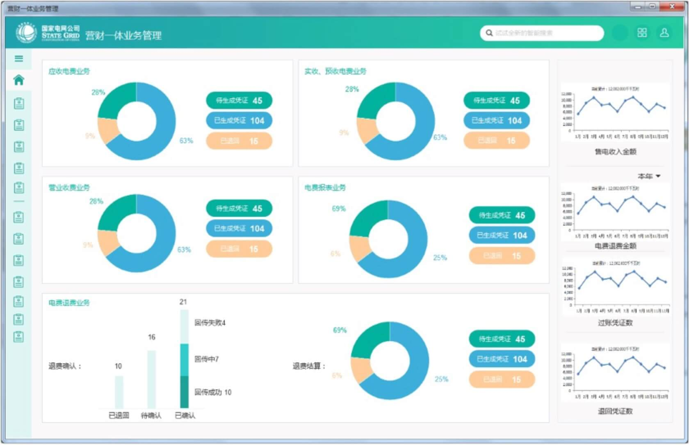
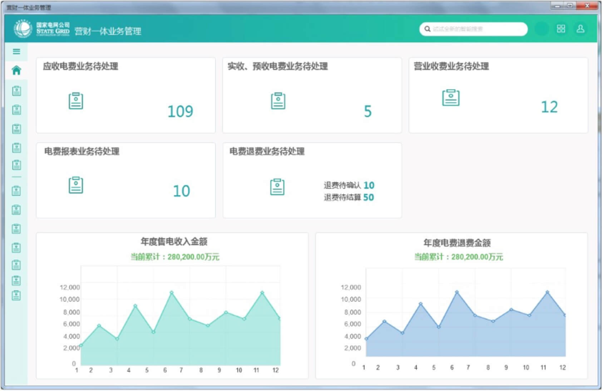
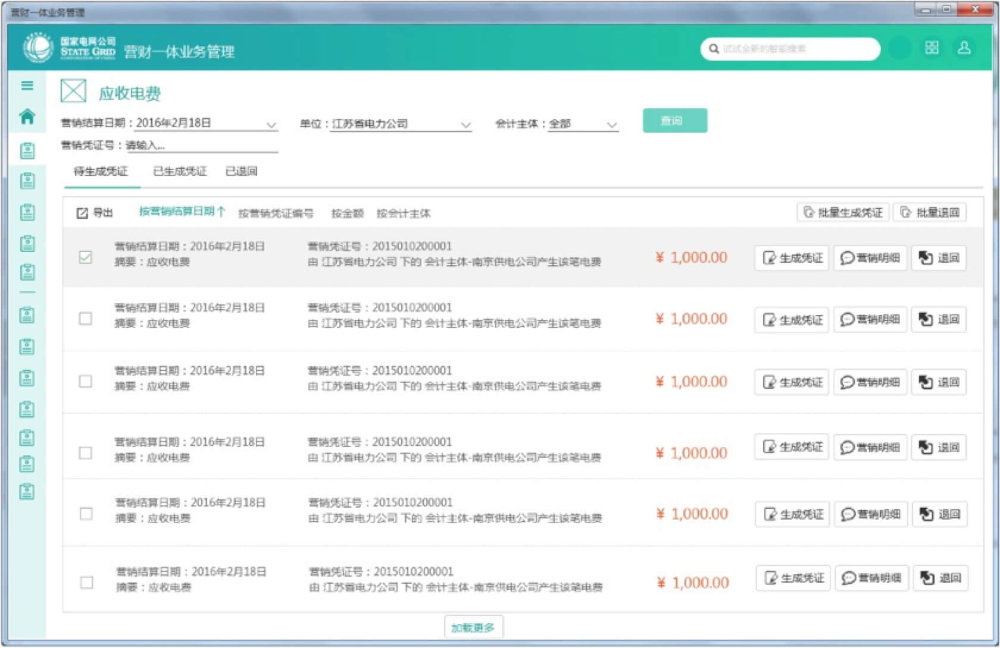
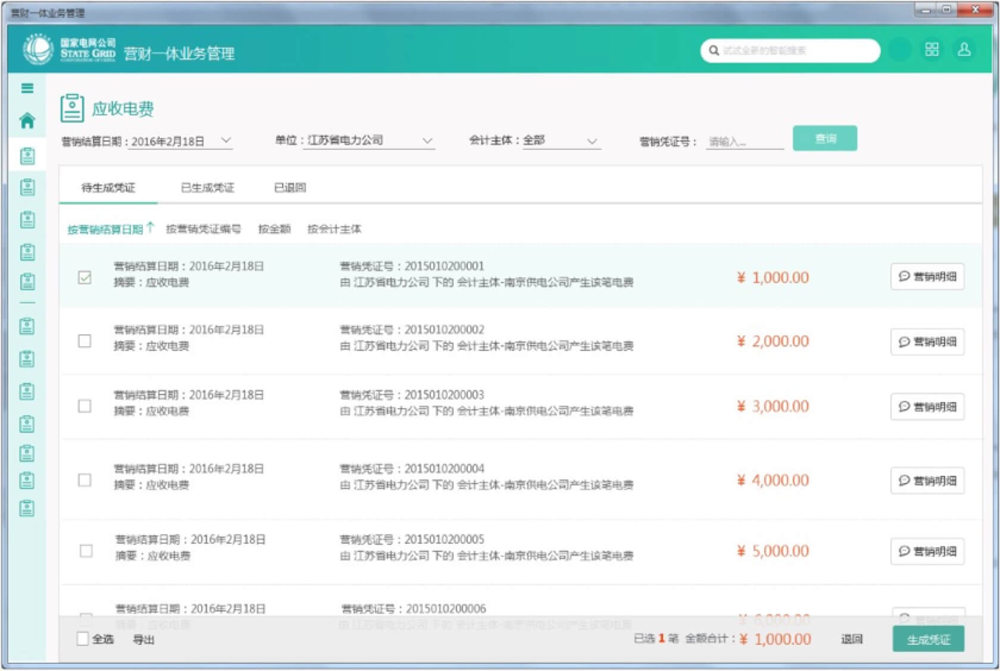
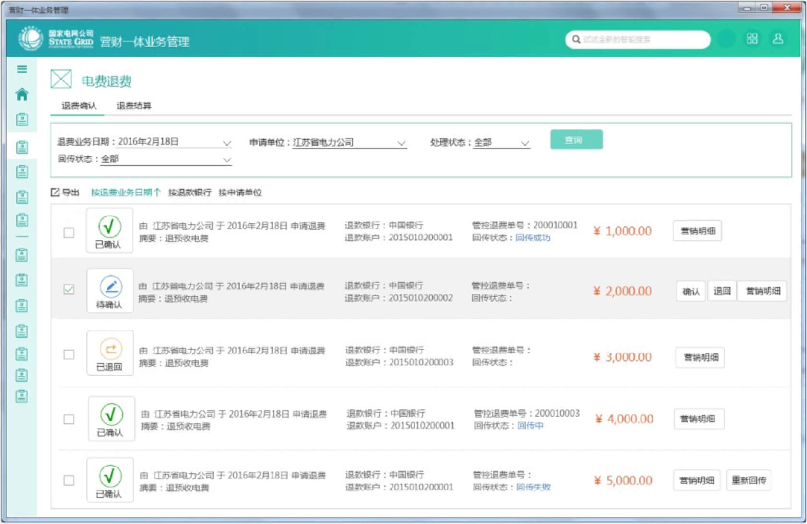
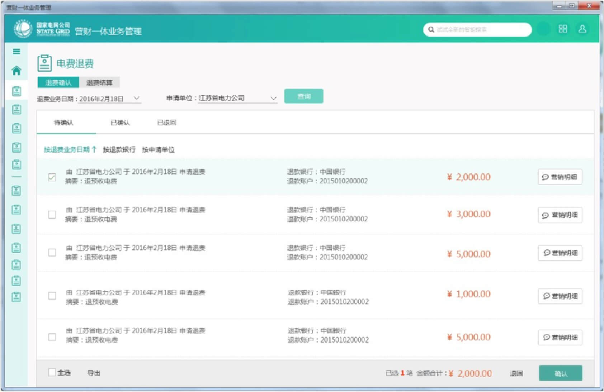

项目背景
营财集成系统是在营销系统与财务系统间，建立业务流程和处理规则。通过数据接口，使营销中业务处理与财务中的账务处理建立关联。从而解决重复维护、数据不一致及信息孤岛的问题，达到营财信息共享目的。在这个江苏定制项目中，由于原SAP进行的财务处理，部分划到营销，部分划到财务管控。于是就有了在管控中提供电费业务处理功能完善优化的要求。机遇是，此时我们UI3.0风格框架已有雏形，且全公司都在推行支持平板等移动端的微应用。因此，孕育而生的是一套突破传统系统操作交互逻辑与展现形式，调整信息框架，实现数据可视化，为用户带来更合理、便捷的操作的系统。
按规矩，接下来应列用研环节的各种流程、方法。似乎涵盖用户访谈、定性研究、焦点小组、用户测试等等，才是正确的打开方式。不过抱歉的是，这里没有你要的用研。这是目前的现状，也是让我困惑的地方。所以分享两个点，希望能有所思考。
作为To B产品交互设计师，实际情况是绝大多数时候我们无法接触到真实用户，一般是与需求或产品经理进行短暂了解。这背后反映出的是to b端产品价值，即根据公司战略或工作需要，构建生态体系，或推动流程系统化，提高效率。也就是需求主要来源并不是普通用户，因此在给具体系统做交互或用户体验工作时，用研这一环节往往不受重视。
而无论ｔｏｂ还是ｔｏｃ都存在的共性问题：如何发挥用研的价值？很多时候用研的价值并不能被很好理解，人们会抱怨用研离业务太远。一方面考虑时间、投入不允许。往往用研周期与项目迭代不合拍。普遍困境是：产品节奏快，而用研没跟上。用研不能跑在产品设计和开发前，无法影响产品决策和设计。
在设计过程中，对方案反复进行了历程分析和交互逻辑验证，确保每个细节的可实现性和易用性。尽可能降低用户的学习成本，真正达到以用户体验为首要目标的设计宗旨，给予用户最舒适的操作习惯和行为流程，最大化提高使用效率。
1、主页
用户关注什么信息？
首先设计的是一个看似很“炫”的方案。但其实仔细分析就会发现，实际上用户并不需要知道每个业务对应的占比情况，退费确认也是一样的考量。相比而言，指标数据情况用户是比较关注的，希望能更加清晰直观的了解到全年的变化趋势。所以说，我们的设计必须是处于用户需要什么，要解决什么问题，这样的出发点。否则，界面只是一味的增加亮点反倒对用户来说是一种负担。
解决方案：
第二个方案相比而言，更简洁更清晰更符合用户的实际操作预期。另外，在确定主页布局时，也是经过了好几次的讨论。总体来说，我想提供一套让用户可以很方便进行切换的系统，但考虑到菜单多的情况，所以最后考虑使用频率和场景，把设置类功能隐藏到了右上角的设置图标中。很好的解决了系列的问题。
2、业务处理：应收电费
什么样的流程是符合使用场景的？
除了把传统的表格改为语义化的列表以外，在设计业务处理功能时，更多考虑的是实际使用的流程。一开始的方案是基于单条数据进行操作的场景，用户无需勾选，核对数据无误后，就可以直接在后面进行处理。而对于批量操作，则是通过选中后点击右上的批量按钮进行处理。出现的问题是，主要操作不突出，批量处理麻烦。
解决方案：
因此，优化后主要是突出用户最主要的操作——生成凭证，对于查看明细是单条操作查看，退回作为一个非经常要操作的按钮放置在下方。批量和单条操作为差异，都是通过勾选来完成。相比而言，显得简洁清晰一些，不是给了用户一堆的按钮进行选择，而是分清每个按钮使用的场景，突出重点，弱化功能。再加上之后了解到数据量比较庞大，修改后很好解决了批量处理的场景。操作起来也更加的顺畅。
3、业务处理：电费退费
交互逻辑是否能跑通？
电费退费是其中一个较为复杂的功能。最初绘制原型如上，出现问题是：状态太多，交互逻辑混乱，导致用户比较迷茫，仅退费确认页签里就有5种状态。再加上采用列表显示受限于分辨率，会出现折行错乱的问题。按钮没图标的情况下就已经没有空间了。如果字段再长点，就会非常的混乱。
解决方案：
经过重新梳理，为避免引起歧义，在退费确认下划分为待确认、已确认和已退回三个页签。每个页签就按照当前状态下应该有的业务提供相应的操作按钮。经过这样的调整，所有的问题迎刃而解，操作流程变得清晰明朗起来。这就是设计的魅力所在，每当解决完这样一个问题总会让我非常有成就感。交互的力量就是可以把杂乱无章的界面，经过分析梳理重新归拢，突出核心，不需要让用户思考怎么操作，而是引导用户高效的完成任务。
最终效果展示
对于大容量信息的展示，层级划分是个巨大挑战。
所幸的是，最终通过对每个信息单元精准控制与设计，能将众多内容有效呈现给用户，便于浏览，定位和作出选择。
这个项目是我第一次尝试做微应用，整个过程和需求同事配合的很好。虽然反复修改变更，但最后有个好的结果得到广泛认可，就是值得的。现在看这作品有很多稚嫩的地方。很多考虑不够周全的地方。所以每次完成设计后，过了一段时间，就需要我们拿出来复盘一下，和实施人员沟通，看能否收集到用户关于设计的建议，这样随着经验的累积，总会越来越成熟，越来越符合预期。
其实To B or not to B, that’s not a question。复杂也好，设计难度高也好，用研基础不够也好。种种的特殊性并不妨碍我们做好设计。经过一段时间的思考，其实我发现无论什么样的产品，本质其实都是一样的，因为都是给人使用的。无论哪一类都需要良好的体验，没有人愿意用一个难用、影响效率的产品。在做具体项目时，受限于研发流程，暂时还未能做到直接与用户的对话。但只要是牢牢把握住要为用户解决问题的观念。站在用户的角度，多分析积极沟通获取信息，围绕以用户为中心的设计方法，则最终的产品总会获得用户肯定的。在一个领域做一类产品，必然有其固有的特性，但不应成为我们不去思考的理由。
而针对用研价值的发挥。我想可以考虑让用研融入到迭代周期里。重要的是找到一个尽量平衡业务和用研的关系的点。不是为了完成一个步骤一个流程而进行用研工作，关键的是要结合整个产品来考量，切实围绕痛点，能落到实处。